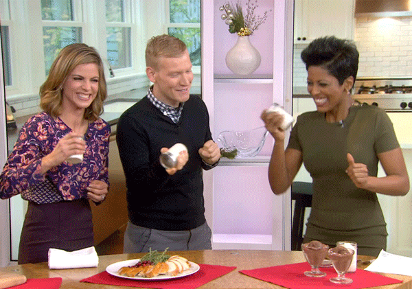

I'm Judith.
a web developer


Welcome.
I'm a content creator with a love of food, traveling, and tennis.
My Skills.

Programming & Design
I am a self taught web developer. I began this incredible journey as a way to bridge the gap between my creative and my collaborative sides. Each day is a new adventure filled with codes.

Cooking & Eating
I am known as a foodie. I love to cook, bake, and eat both from restaurants and my own creative creations. Life is too short not to enjoy fantastic food.